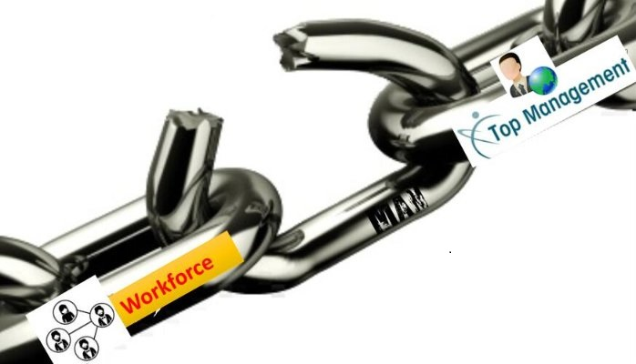

Never Stop LEARNING...
PREVIOUS BLOG NEXT BLOG
Management ~ Workforce: A missing link
管理层 ~ 员工：一条消失的关系线
Article Length: 500 words.Reading time: 3~4 minutes.

Situation: Crystal Zhang (A small town girl) joined an IT company in Shenzhen. She had enough passion to grow via pursuing company’s mission and objectives. Despite working hard she has no apparent vision about company’s objective and mission. Any manager beyond PM wasn’t accessible to her. Even though top managers (CEO, GM, and VP) offices were in same premises, she had rarely seen them except annual function, where all of them talk the same language like revenue in millions and billions, 2020 plans, mission, values and so on followed by clapping from the audiences. It just seems like a TV show.
PM merely speak the work language, for example - kickoff, cost, milestones, and delivery etc. Immediate supervisor (PM) just speak the work language, i.e. KPIs were never clarified from reporting manager. No motivation or common understanding to address her performance issues, no apparent career path such as where she can be in next two or more years, what are her strengths and weaknesses. HR was nowhere in picture, HR merely monitor attendance, overtime and salary records.
情形：张晶晶（一个小镇姑娘）在一家深圳的IT公司工作。她有足够的热情通过完成公司的任务和目标使自己成长。尽管工作很努力，但对于公司的任务和目标她并没有突出的远见。除了项目经理，所有管理者都无法接触到她。即使高层管理者（总裁、总经理、副总裁）的办公室都在同一个办公楼里，她也很少看见他们。只有在年会上才会见到，他们会说一些相似的话题，像数以百万的收益、2020年的计划、任务、价值等等，紧跟着是观众的掌声。简直像一个电视节目。 项目经理只谈论一些工作的话题，例如—项目启动、费用、里程碑、交付等。直接领导只讲工作的事情，即报表经理从来不会澄清业绩指标。没有动机或者共识去解决她的绩效问题，没有清楚的事业规划，比如今后两年或几年她将会在哪？她的优势和劣势是什么？然而这些和人力资源没有任何关系，他们只负责监控考勤，加班和工资记录。
Analysis: She analyzed whether she is a human being or robot? Give time (9 AM to 5 PM) and get paycheck by the end of month. We all spend most of our time at workplace. Workplace environment directly affect the quality of our life.
Company A is cutting 15000 jobs, Company B is laying off 3500 employees are very common news these days. Most of the managers are failed to convey company values and mission to workforce. The crux of the issue is management and workforce, despite working for same organization have different visions, goals and priorities. Let me elaborate – top management is completely devoted to numbers i.e. revenue, vision 2020, market share and so on.
On the other hand employees focus is limited to give time and get paycheck. Management and employees shall be considered two wheels of a car. However instead of moving in same direction to achieve company goals they have different set of priorities, no common agenda. Management ~ workforce communication link seems broken or lost.
分析：她分析道自己究竟是人还是机器。朝九晚五，月底收薪。大部分时间我们都在工作区间，因此工作环境直接影响着我们的生活品质。 甲公司裁员15,000人，乙公司解雇3,500员工，这些都是最近很常见的报道。大部分管理者未能向劳动者传达公司的价值与使命。 这个问题的关键是管理层与员工，尽管效命于同一组织有着不同的愿景，目标及重点。我来详细阐述–高层管理完全致力于数字，即收益、视觉2020、市场占有率等等，另一方面员工的焦点锁定在时间的付出和薪酬的回报上。管理层和员工应该双管齐下。然而并非统同一方向来实现公司目标，他们有各自不同的一套优先级，非共同日程，否则管理层~员工这根通信线路便会被断开或丧失。
Effects: This missing link is causing severe negative consequences on society. Employees feel insecurity and fear about future. They are not able to realize the company visions and missions. Employees pursue their own goals rather than organization goals. Less engagements affect productivity and revenue. Talent is lost to competitor. Retaining and hire best talent has become nightmare for organizations across the world.
影响：这个错失的环节正在导致社会严重的负面后果。企业雇员对未来充满恐惧、缺乏安全感。他们难以意识到公司的远见及使命。与此同时，企业员工将追求个人目标，远远看得高于组织的目标。员工所投入的努力值越小，就会影响到企业的生产力和财产收入。基于这些因素，人才甚至会流失到竞争对手公司。因此想要雇用及留住顶尖人才，已经成为全球企业的一场噩梦
Call for Action: In his 34 years at HP, Alan says the company was built on authentic leadership. HP founder Bill Hewett and Dave Packard believed leadership was more about engagement and trust -- equipping people with clear objectives, and then trusting them to get the job done. They developed a culture of collaboration, says Alan, and avoided micro-management.
Most of the problem mentioned above can be resolved if management open formal and informal communication channel with workforce, encourage employees’ engagement programs. Employees also need to take initiatives to fill this gap.
Can you remember the last time your big boss give you a call or talked about your opinion, or care your concern? This is the missing link which is affecting our lives even if we don’t notice it.
呼吁行动：在他34年的惠普工作生涯中，艾伦表示公司是建立在真正的领导能力上的。惠普的创始人比尔·休利特和戴维·帕卡德相信领导能力更多是关于约定和信任--给其他人清楚的目标，然后相信他们可以完成工作。他们发展了一种合作的公司文化，也避免了微观管理（管的太细）。
以上所提及的情况，管理阶层可以以开放的态度，通过与全体员工，内部管理者以及执行雇用机构进行正式或非正式的交流。事实上，员工也需要采取主动权去弥补这个缺陷。
你是否记得何时你的上司最后一次给你来电，或问及你的观点，在乎你所关心的问题？这一错失的环节正在影响我们的生活，甚至影响到我们还未曾注意到的其他方面。
Note: Based on feedback from readers, I keep my articles short and crisp, i.e. 500 (English) words, Reading time: 3~4 minutes.
Feel free to reach me at:
Email: kaushiknt@yahoo.com
WeChat: kklove0604
PREVIOUS BLOG NEXT BLOG